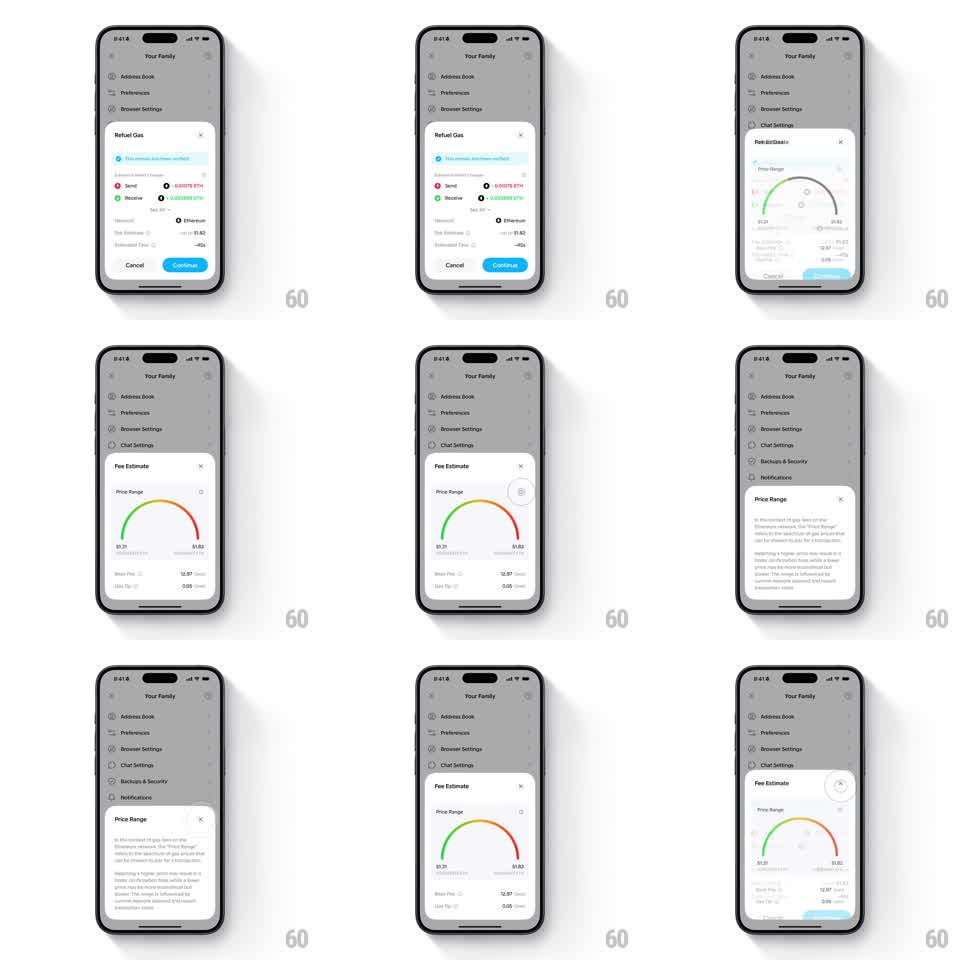

Media
Frame-by-frame

Rebuild this interaction 1:1: Family's refuel-gas sheet sequence - from the light "Your Family" settings list, a "Refuel Gas" sheet morphs into a "Fee Estimate" sheet with a semicircular price-range gauge, which morphs into a "Price Range" explainer sheet, each transition resizing the container and swapping content fluidly before collapsing back.

Rebuild this interaction 1:1: Family's refuel-gas sheet sequence - from the light "Your Family" settings list, a "Refuel Gas" sheet morphs into a "Fee Estimate" sheet with a semicircular price-range gauge, which morphs into a "Price Range" explainer sheet, each transition resizing the container and swapping content fluidly before collapsing back. ## Integration Integration: stack-agnostic spec - springs given as stiffness/damping, timed motions as duration + curve; map every value to your framework and animation library of choice. ## Scene Light settings list behind (Address Book, Preferences, Browser Settings, Chat Settings...). Sheet 1 "Refuel Gas": info banner "This action requires gas", Send/Receive rows (0.00079 ETH / 0.00088 ETH), Network Ethereum, Gas Estimate $1.52, Enhanced Fees -40%, Cancel / blue Continue. Sheet 2 "Fee Estimate": "Price Range" gauge - a semicircular arc from green through yellow to red, needle, range endpoints $1.31 / $1.52, Base Fee $2.97 Gwei, Gas Tip 0.05 Gwei. Sheet 3 "Price Range": explainer paragraphs about Movement / gas fees. ## Motion spec Pattern: sequential sheet morphs with shared container. - Tap into the flow: sheet 1 slides up (spring ~300/20) over the dimmed list (scrim 40%). - Tap Continue: sheet 1's rows slide up and out (150ms, 30ms stagger) as the container's height eases to sheet 2 (spring ~280/22, 300ms); the gauge draws its arc (stroke trim green-to-red, 400ms) and the needle swings to the estimate (rotation spring ~300/16, overshoot 4deg). - Tap the info affordance: the gauge scales down (0.9, 200ms) as the container morphs to sheet 3's text layout (spring ~280/22, 300ms), paragraphs staggering in (50ms apart). - Back/close: sheets reverse through their morphs or slide down fully (250ms), scrim lifting. ## Calibration - One container across all three sheets - corner radius constant, height springs. - The gauge's green-to-red arc is the only multicolor element; everything else is grayscale plus blue actions. ## Reduced motion Sheets crossfade content (200ms); the gauge appears fully drawn. ## Don't miss - The needle overshoots slightly before settling on the estimate value. - Sheet 1's "Enhanced Fees -40%" is green - it matches the gauge's cheap end.